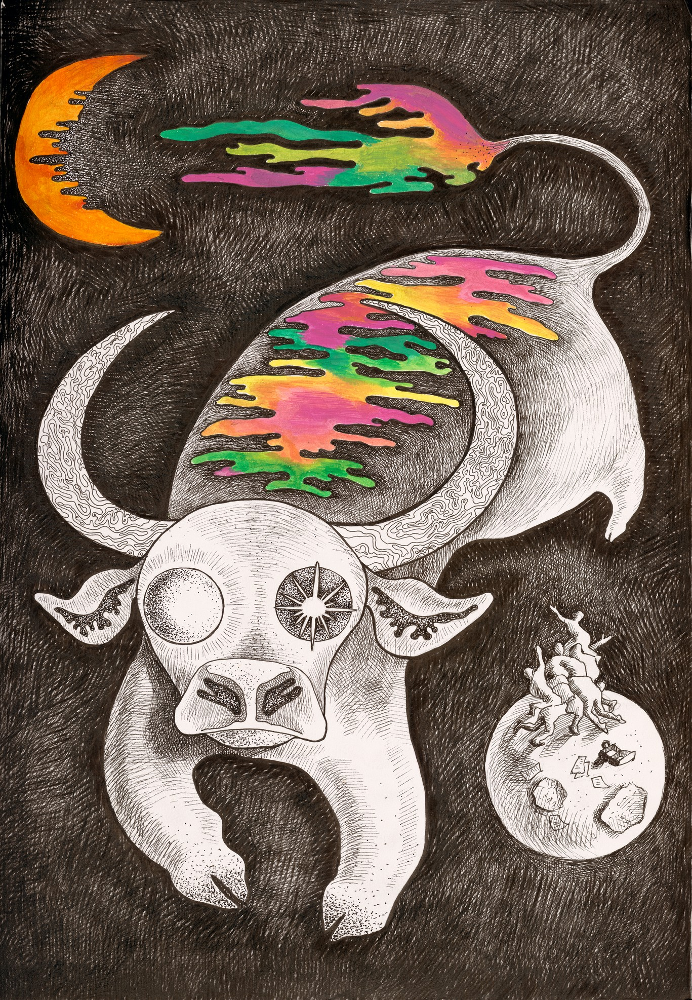
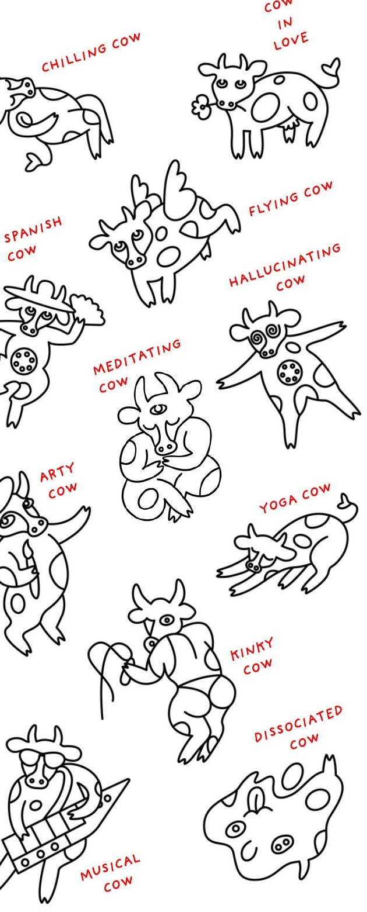

MOOWS / Issue 01 · August 2026 Moon Art Daria Z · Printed pages 21 Artwork by Daria Z · page 21 · View printed page Cow illustrations by Lucy O · page 23 · View printed page Back to contentsRead in the magazine ↗Share this piece ↗